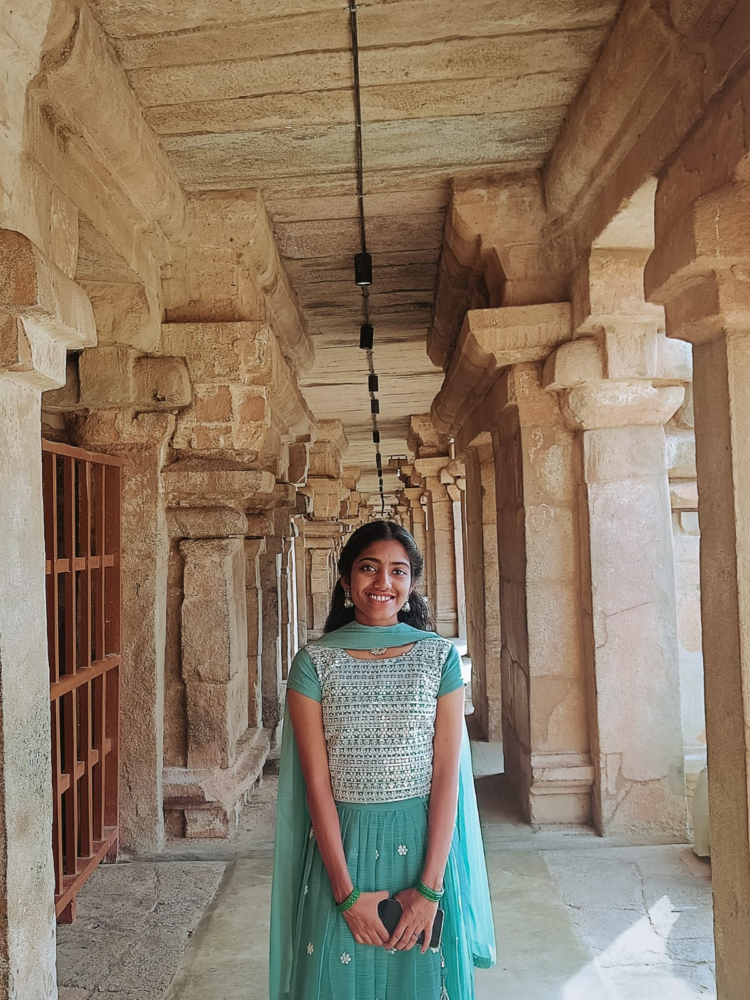

KindKart
A frontend donation platform built using HTML, CSS, and JavaScript. The application facilitates item-based donations, generates digital donor badges, tracks donation progress, and enables social sharing.
Computer Science Student • Web Developer • UI/UX Enthusiast

Hello! I'm Lakshmipriya T S, a B.Tech Computer Science student with a minor in Biotechnology Engineering. I am passionate about web development, UI/UX design, and database management.
I have worked with HTML, CSS, JavaScript, React, Python, Java, MySQL, and Supabase through academic and personal projects. I enjoy building practical solutions and continuously learning new technologies.
B.Tech in Computer Science and Engineering
Sahrdaya College of Engineering and Technology
2024 – 2028 (Currently Pursuing)
Currently developing skills in Web Development, React, Git & GitHub, and Data Analytics through projects and continuous learning.
A frontend donation platform built using HTML, CSS, and JavaScript. The application facilitates item-based donations, generates digital donor badges, tracks donation progress, and enables social sharing.
A web application developed to streamline stray dog reporting, volunteer coordination, and animal welfare management.
A database-driven application that manages prescriptions, generates medicine schedules, and automates reminders using Supabase and PostgreSQL.
Download my resume below:
Download ResumeEmail: lakshmisowparnikam@gmail.com
GitHub: github.com/lakshmipriya-ts
LinkedIn: linkedin.com/in/lakshmipriya-ts